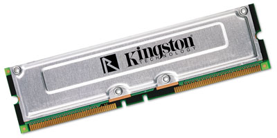
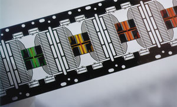
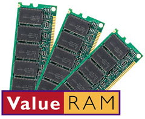

Андрей Борзенко
Память - один из основных компонентов любого компьютера, будь то карманный ПК или мощный сервер. По мере дальнейшего увеличения быстродействия микропроцессоров эффективное быстродействие элементов памяти часто становится узким местом компьютерных систем.
Обычно рассматривают модель четырехуровневой иерархии памяти: кэш-память первого уровня (сверхоперативная L1), кэш-память второго уровня (сверхоперативная L2), основная (оперативная) и внешняя память (жесткие диски). В качестве основных критериев при таком делении выступают быстродействие и цена; последняя, в свою очередь, влияет на типичные размеры конкретного вида памяти.
Принцип работы динамической памятиКаждый бит динамической памяти представляется как наличие (или отсутствие) заряда на конденсаторе, входящем в структуру полупроводникового кристалла. Единственный способ выяснить, заряжен или разряжен конденсатор, - попытаться разрядить его. Если конденсатор до проверки был заряжен (т. е. хранил единичный бит), то после разряда его, разумеется, надо снова подзарядить. Ячейки памяти динамического типа конфигурируются обычно в матрицу строк и столбцов, причем процесс считывания организуется таким образом, что содержимое целой строки переносится в некий буфер. После считывания соответствующего бита содержимое буфера перезаписывается в ту же строку ячеек динамической памяти, т. е. происходит перезарядка конденсаторов, которые до считывания были в заряженном состоянии. Время хранения заряда конденсатором ограничено (из-за паразитных утечек). Чтобы не потерять имеющиеся данные, необходимо периодически восстановливать записанную информацию, что и выполняется в циклах регенерации.
|
Современная индустрия постоянно вводит в употребление новые технологии, и основанные на них запоминающие устройства различаются по многим параметрам, начиная с архитектурных особенностей и заканчивая форм-фактором монтажного модуля памяти.
Базовые понятияЦикл обращения (access cycle) - время между двумя последовательными операциями записи-чтения. Различают полные и сокращенные циклы. При полном цикле обращения к памяти идут по случайным адресам, при сокращенном - по последовательным. Время доступа (access time) - время, необходимое на полный цикл обращения к информации, хранящейся по случайному адресу. Страница (page) - набор доступных адресов (столбцов) при фиксированном адресе строки. Размер страницы равен числу столбцов матрицы памяти. Асинхронный режим (asynchronous mode) - режим работы, при котором выполнение каждой последующей операции начинается после приема сигнала, указывающего на окончание предыдущей. Синхронный режим (synchronous) - режим, при котором выполнение каждой операции начинается в фиксированные моменты времени, определяемые специальным тактовым сигналом. Ширина шины (bus width) - количество разрядов, которые можно передать по шине одновременно. Банк памяти (bank) - 1) блок, область памяти; 2) группа модулей памяти, которые должны быть установлены на системной плате компьютера. Число таких модулей определяется отношением ширины шины данных микропроцессора к ширине шины данных модуля. Чередование (interleave) - способ ускорения работы памяти, основанный на предположении, что чтение информации происходит по последовательным адресам. Вся память делится на четное количество банков (2N), а адресное пространство распределяется таким образом, что последовательные адреса находятся в разных банках. При последовательном обращении к данным в режиме чередования возможно получить до 2N обращений за обычный цикл. Обращения к банкам идут, разумеется, с небольшим временным сдвигом. Пакетный режим (burst mode) - режим, при котором на запрос по конкретному адресу возвращаются не только данные, хранящиеся по этому адресу, но и пакет данных по нескольким последующим адресам. Конвейерный режим (pipeline) - метод доступа к данным, при котором можно продолжать операцию чтения по предыдущему адресу в процессе запроса по следующему. |
Эволюция динамической памяти
Для динамической памяти прямое сокращение времени доступа технологически достаточно сложно и приводит к резкому росту стоимости. Именно поэтому основной упор делается на различные схемотехнические приемы - конвейерный режим, чередование адресов, организацию банков и т. п. Рассмотрим основные типы динамической памяти, которые использовались ранее и до сих пор применяются в компьютерных системах (предполагаемые сроки замены их на самые современные приведены в табл. 1).
Таблица 1. Прогноз смены типов памяти
| Платформа | 2001 | 2002 | 2003 |
| Настольные ПК | SDRAM | DDR | DDR |
| Серверы | SDRAM | SDRAM/DDR | DDR |
| Рабочие станции | RDRAM/PC133 | RDRAM/DDR | RDRAM/DDR |
| Портативные ПК | SDRAM | DDR | DDR |
| Иные компьютеры | SDRAM | SDRAM/DDR | DDR |
Fast Page Mode DRAM
Технология FPM DRAM в свое время позволила значительно - по сравнению с более ранней реализацией DRAM - ускорить доступ к последовательно расположенным (в пределах страницы) ячейкам памяти. Напомним, что в матрице динамической памяти считывание в статический буфер происходит для всей строки целиком, конкретный же бит выбирается уже адресом столбца. Понятно, что если следующий подлежащий считыванию бит находится в той же строке, то нет смысла читать ее в буфер еще раз. FPM DRAM использовалась в компьютерах класса до Pentium-100. Типичное значение времени доступа - 60-70 нс. FPM DRAM сменила обычную DRAM, применявшуюся в компьютерах на базе микропроцессоров 8086/88 и 80286, и использовалась в персональных компьютерах примерно до 1994 г.
Extended Data Out DRAM
В отличие от обычной памяти со страничной организацией EDO DRAM оснащается дополнительным набором регистров-"защелок", благодаря которым данные на выходе могут удерживаться даже в течение следующего запроса. Такого эффекта можно добиться на FPM DRAM только в режиме чередования адресов. Напомним, что в любом обращении к памяти можно выделить три фазы - 1) начало доступа, 2) период, когда данные становятся действительными, и 3) непосредственно передачу. Эти фазы повторяются последовательно для каждой ячейки в считываемой строке. В случае с EDO-памятью временные параметры (а следовательно, и быстродействие) улучшаются за счет исключения циклов ожидания в фазе готовности данных. Типичные времена доступа - 45, 50, 60 и 70 нс.
Burst EDO DRAM
В памяти типа BEDO, в отличие от EDO DRAM, выборка четырех операндов команды передачи данных происходит автоматически. BEDO DRAM была разработана как альтернатива синхронной памяти, однако не получила поддержки разработчиков наборов микросхем, и к тому же у нее была невысокая максимальная тактовая частота (66 МГц), так что она не нашла широкого распространения.
Невысокое быстродействие подсистемы памяти с модулями DRAM было обусловлено невозможностью точной синхронизации частоты процессора и скорости обработки данных в ячейках памяти. При считывании нельзя было сказать, откуда в следующий раз будет браться информация - из другого банка или из соседней ячейки, - и сколько времени на это потребуется. К тому же во время обращения к памяти процессор не мог работать с другими компонентами системы, что, естественно, снижало производительность.
Synchronous DRAM
Этот тип памяти позволил еще больше поднять быстродействие. SDRAM использует ступенчатую конвейерную архитектуру и, кроме того, внутренний доступ типа "пинг-понг" к блокам памяти с чередованием адресов. Синхронизация работы памяти SDRAM осуществляется обычно частотой системной (внешней) шины. SDRAM работает примерно так же, как и стандартная DRAM, - осуществляя доступ к строкам и колонкам ячеек данных. Но в SDRAM применен специфичный механизм синхронного функционирования банков ячеек, который в сочетании с пакетным режимом эффективно устраняет состояния задержек и ожидания. Когда процессору необходимо получить данные из оперативной памяти, он может получить их в требуемый момент. Таким образом, хотя фактическое время обработки данных не изменилось, эффективность выборки и передачи данных повысилась. Благодаря жесткой синхронизации контроллер памяти точно "знает", когда запрошенная информация будет обработана. Это освобождает процессор от состояний ожидания. Задержки в SDRAM эффективно устраняются благодаря синхронному функционированию блоков ячеек. Поскольку работа памяти и процессора согласуется системным таймером, то в конце каждого такта на выводах модуля памяти появляется сигнал готовности данных, следовательно, процессорное время тратится лишь на циклы чтения-записи. Кроме того, конвейерная адресация обеспечивает доступ к следующему блоку запрошенной информации до завершения обработки предыдущего.
Double Data Rate SDRAM
Вообще говоря, обычную синхронную память правильнее называть SDR (Single Data Rate) SDRAM. Синхронная память с удвоенной скоростью (DDR) сохранила архитектуру, количество банков и сам технологический процесс производства SDRAM, однако имеющиеся в ней схемотехнические усовершенствования позволяют существенно увеличить ее быстродействие. В частности, здесь используется еще более жесткая синхронизация работы устройства. В функциональную структуру введены схемы фазовой автоподстройки частоты DLL (Delay Locked Loop), обеспечивающие для сигналов стробирования данных цикл с фиксированной задержкой. Эти сигналы помогают контроллеру памяти более точно синхронизировать данные, поступающие от разных модулей памяти, находящихся в одном банке. Микросхемы DDR SDRAM фактически увеличивают скорость доступа к данным вдвое по сравнению с SDRAM, используя при этом одну и ту же частоту. Дело в том, что применение DDR SDRAM дает возможность читать информацию как по переднему, так и по заднему фронту сигнала таймера. Кроме того, частота операций повышается за счет использования интерфейсных логических схем с низким питающим напряжением. Если для SDRAM обычно используются схемотехнические решения на базе низкоуровневой транзисторно-транзисторной логики LVTTL (Low Volt Transistor-to-Transistor Logic) с напряжением питания 3,3 В, то в DDR SDRAM применяется специальная логика SSTL (Stub Series Terminated Logic) с напряжением 2,5 В.
Direct Rambus
Известно, что существует только два способа повышения пропускной способности любой компьютерной подсистемы - это либо повышение частоты работы шины, либо увеличение ее разрядности. Одновременное увеличение обоих параметров достаточно проблематично. Именно это обстоятельство вынуждает разработчиков идти на компромисс. В противовес технологии SDRAM, использующей 64-разрядную магистраль и частоты до 133 MГц, технология Rambus предоставляет 16-разрядную шину данных и эффективные частоты до 800 МГц соответственно. Узкая шина и высокая частота значительно увеличивают эффективность использования памяти и оптимизируют ее загрузку, максимально освобождая протокол от временных задержек. Direct Rambus позволяет достичь очень больших скоростей передачи данных: до 1,6 Гбайт/с на один канал и до 6,4 Гбайт/с при четырех каналах. Вся подсистема DR состоит из следующих компонентов: основной контроллер (Rambus Memory Controller, RMC), канал (Rambus Channel, RC), разъем для модулей (Rambus RIMM Connector, RRC), модуль памяти (Rambus In-line Memory Module, RIMM, рис. 1), генератор дифференциальных импульсов (Direct Rambus Clock Generator, DRCG) и микросхемы памяти (Direct Rambus DRAM, DRDRAM). Физические, электрические и логические интерфейсы, применяемые в системе, определены компанией Rambus (http://www.rambus.com) и должны строго выполняться всеми производителями для соблюдения абсолютной совместимости ее частей. Система функционирует на частоте 800 МГц (PC800), синхронизируясь сигналом 400 МГц. Модули RIMM нового поколения тактируются частотой 533 МГц, за счет чего обеспечивается более высокая пропускная способность (спецификация PC1066). В этих модулях задействована 4-банковая архитектура 4i (4 independent bank), позволяющая снизить себестоимость RIMM.
|  |
| Рис. 1. RIMM-модуль.
|
Сигнальный протокол Direct Rambus основан на электрическом интерфейсе RSL (Rambus Signaling Levels), дающем возможность при помощи технологии удвоенной передачи данных (DDR) получить результирующую частоту 800 МГц и использовать стандартный КМОП-интерфейс сигналов ввода-вывода ядра ASIC (Application Specific Integrated Circuit). Высокоскоростной протокол сигналов RSL использует низковольтные напряжения логических уровней.
Запоминающее ядро микросхем имеет многобанковую организацию. При этом каждый банк может иметь как выделенные, так и совместно используемые усилители считывания, благодаря чему в микросхеме может быть активировано несколько банков одновременно.
Канал DRDRAM представляет собой синхронную последовательно-параллельную шину. Он содержит 35 активных линий. Из них можно выделить две раздельные шины - для управления (адреса) и для данных. Первая имеет ширину 8 бит, из которых 5 соответствуют адресу столбца, а 3 - адресу строки ячейки памяти. Вторая шина имеет 16 разрядов. Передача всех сигналов в канале происходит в направлении распространения тактовых импульсов, которые от генератора вначале поступают на дальний от контроллера модуль памяти. По достижении контроллера направление их движения меняется на обратное. Все сигнальные шины проходят через модули и заканчиваются на терминаторе. Система памяти не может функционировать при наличии пустых разъемов, поэтому такие разъемы заполняются специальными заглушками. Данные и адреса передаются по каналу пакетами. Функции по их обработке возложены на контроллер, в состав которого входит мультиплексор-демультиплексор. Он производит операции упаковки и распаковки на границе между узким последовательным потоком данных в канале и более широким синхронным параллельным в самом контроллере.
Новшеством для технологии памяти стало использование в DRDRAM четырех режимов энергопотребления - активного (Active), ожидания (Standby), экономного (Nap) и сна (PowerDown). В первом режиме DRDRAM может мгновенно обработать запрос на передачу данных. Естественно, этот режим характеризуется самым высоким энергопотреблением. Режим Standby - это обычное состояние ожидания запроса. В нем находятся все устройства, не принимающие участия в передаче. В отличие от обычных систем памяти на основе DRAM, где все устройства, входящие в банк, потребляют энергию во время операций записи-чтения, в памяти типа Rambus это происходит только с одним устройством - остальные переходят в режим ожидания, являющийся основным. Режимы Nap и PowerDown еще более экономны. Между собой они разнятся уровнем потребления и скоростью перехода в активное состояние.
Микросхемы и модули
Емкость микросхем памяти традиционно измеряется в битах, а вот применительно к модулям используют байты (1 Мбайт = 8х1 Мбит). Обозначение 1 Мх4 означает, что данная микросхема может адресовать один мегабит ячеек, в каждой из которых может храниться 4 бита информации. Говорят также, что емкость такой микросхемы 4 Мбит. Как правило, емкость микросхем памяти растет с инкрементом 4. Дело в том, что добавление одной адресной линии позволяет увеличить количество строк (и столбцов) в матрице памяти вдвое, всего же ее размер возрастает вчетверо.
Каждый кристалл памяти (рис. 2) содержит ячейки, в которых может храниться несколько разрядов данных. Например, 16-Мбит кристалл может быть сконфигурирован как 4 Mбит x 4, 2 Mбит x 8 или 1 Mбит x 16, но во всех случаях его общая емкость равна 16 Mбит. Число разрядов на ячейку показывает, сколько бит передается одновременно при обращении к ней. Микросхемы памяти помещают в корпуса для поверхностного монтажа на печатных платах типа SOJ (Small Outline J-lead), TSOP (Thin Small Outline Package) или CSP (Chip Scale Package). Маркировка, нанесенная на корпус любой микросхемы, как правило, содержит специальные обозначения, включающие, например, страну, наименование (или логотип) фирмы-изготовителя, дату выпуска и т. п. Но самое главное - она несет в себе информацию о типе памяти, емкости, времени доступа и других архитектурных и технологических подробностях.
|  |
| Рис. 2. Кристаллы памяти на подложке.
|
Элементы динамической памяти для первых персональных компьютеров конструктивно были выполнены в виде отдельных микросхем в корпусах типа DIP (Dual In line Package), которые устанавливались на системную плату в специальные посадочные места или распаивались. Затем на смену отдельным микросхемам пришли модули памяти типа SIPP (Single In line Pin Package), SIMM (Single In line Memory Module) и DIMM (Dual In line Memory Module). Эти модули представляют собой небольшие текстолитовые платы с печатным монтажом и установленными на них микросхемами памяти. Для подключения к системной плате на SIMM- и DIMM-модулях используется печатный ("ножевой") разъем, а на SIPP-модулях - штыревой. SO DIMM (Small Outline DIMM) - это разновидность DIMM-модулей малого размера, предназначенная в первую очередь для портативных устройств. Наиболее часто встречаются 72- и 144-контактные модули (разрядность соответственно 32 и 64 бит).
Для современных модулей памяти используются многослойные печатные платы. Стандарты предъявляют специальные требования к слоям, расстоянию между дорожками и качеству разводки. Большинство печатных плат имеют четыре слоя (два сигнальных, питание и "масса"). Сигналы и питание и масса должны быть разведены по разным слоям. Отдельные фирмы-производители плат используют шестислойные печатные платы, где каждый сигнальный слой располагается между слоями массы и питания, что уменьшает возможность возникновения шумов и электромагнитных наводок между линиями.
У DIMM-модулей, в отличие от SIMM, контакты на противоположных сторонах платы электрически не связаны между собой. Это дает возможность практически вдвое увеличить количество выводов модуля. Сами микросхемы памяти также устанавливаются на плате с двух сторон. Стоит отметить, что по форм-фактору DIMM-модули DDR SDRAM отличаются от SDRAM: число контактов в них увеличилось со 168 до 184, а изменившееся положение ключа не позволяет вставить модули DIMM DDR в разъемы для SDRAM.
Модули DIMM подразделяются по напряжению питания и нагрузочной способности (буферизированные и небуферизированные). Модули с высокой нагрузочной способностью обычно применяются в системах с большим объемом памяти, так как из-за высокой электрической емкости модулей памяти время их подзарядки (а память нужно всегда подзаряжать, чтобы она не очистилась) становится очень большим, что приводит к потере тактов и вообще чревато ошибками. Буферные микросхемы сохраняют поступившие данные довольно быстро, освобождая контроллер от излишней нагрузки. Понятно, что из-за дополнительных задержек производительность такого рода памяти немного ниже. Первое поколение таких модулей носило название Buffered DIMM и использовалось с памятью типа FPM и EDO. Второе поколение DIMM позволило, наряду с памятью EDO и FPM, использовать SDRAM, а аналогом памяти Buffered для второго поколения стала так называемая память типа Registered. В качестве буферов обычно используются микросхемы приемопередающих устройств (шинных усилителей).
Для наиболее ответственных приложений, где цена ошибки очень высока, используются не обычные модули с проверкой на четность, а модули с коррекцией ошибок ECC (Error Correction Code). Напомним, что идея, лежащая в основе метода ECC, довольно проста - каждый разряд памяти входит более чем в одну контрольную сумму. Это требует увеличения числа контрольных разрядов, но дает возможность восстанавливать значение сбойного бита по несовпадающим контрольным суммам. Итак, ECC использует один разряд четности на байт информации для нахождения одиночных ошибок, а для исправления требуется 7 бит для 32- и 8 бит для 64-разрядной памяти. При этом легко обнаруживаются двойные ошибки.
Перспективной технологией предотвращения ошибок в памяти считается IBM Chipkill. При ее использовании отказ отдельной микросхемы, независимо от ее разрядности, не затронет более одного разряда в каком-либо из слов ECC. Например, в 4-разрядной микросхеме DRAM отдельные биты из всей четверки попадают в разные слова ECC, т. е. в разные адресные пространства памяти. Поэтому даже в случае полного отказа микросхемы количество ошибочных разрядов в словах ECC не превысит единицу, а такую ошибку механизм ECC устраняет автоматически.
Ни один современный модуль памяти не может обойтись без такого компонента, как микросхема SPD (Serial Presence Detect - последовательное определение наличия). Интерфейс последовательного детектирования, регламентированный на данный момент для всех модулей памяти форм-фактора SIMM/DIMM/RIMM, использует двухпроводной протокол управления системой (SMBus, System Management Bus). Протокол совместим со спецификацией Inter-IC (I2C или IIC), с его помощью простые микросхемы могут общаться с остальной частью системы. Принцип использования шины SMBus в случае SPD сводится к передаче данных от микросхемы ППЗУ (EEPROM), установленной на модуле, соответствующим регистрам контроллера памяти, находящегося в составе "северного" моста или концентратора контроллеров основных интерфейсов. Данные передаются через SMBus-интерфейс объединенного контроллера периферийных компонентов ("южный" мост или концентратор контроллеров ввода-вывода) при помощи системного BIOS. Таким образом, система получает все необходимые данные о модуле и настраивается на оптимальный режим работы согласно записанным в микросхему SPD значениям. Все модули, поддерживающие схему последовательного детектирования, должны в обязательном порядке поддерживать операции записи страницы как минимум четырех последовательных адресов. Сама схема SPD характеризуется интерфейсным протоколом, размером карты программирования, типом используемых данных и содержанием. Интерфейсный протокол (SPD Interface Protocol) характеризует электрические, геометрические и физические параметры используемой микросхемы ППЗУ.
Характеристики быстродействия SDRAM
Каждый модуль синхронной памяти имеет ряд характеристик, основные из которых - его временные параметры и частота (табл. 2). Частота измеряется в мегагерцах и определяет производительность данного типа памяти. Так, DDR SDRAM с тактовой частотой 133 МГц (эффективная 266 МГц) обеспечивает пропускную способность шины памяти до 2,1 Гбайт/с. Если в спецификации Rambus DRAM за основу берется результирующая частота (тактовая частота, помноженная на два пакета данных за такт, например, PC800), то для обозначения DDR SDRAM часто используют пиковую пропускную способность. Например, модуль памяти DDR SDRAM с тактовой частотой 100 МГц (8 байт x 200 МГц = 1600 Мбайт/с) будет обозначаться PC1600.
Таблица 2. Характеристики динамической памяти различных технологий
| Тип памяти | Ширина шины, бит | Ограничение по скорости | Пиковая пропускная способность, Мбайт/с |
| FPM DRAM | 64 | 60-70 нс | 200 |
| EDO DRAM | 64 | 45-50 нс | 320 |
| PC66 SDRAM | 64 | 66 МГц | 528 |
| PC100 SDRAM | 64 | 100 МГц | 800 |
| PC133 SDRAM | 64 | 133 МГц | 1060 |
| DDR200 SDRAM (PC1600) | 64 | 100 МГц (х2) | 1600 |
| DDR266 SDRAM (PC2100) | 64 | 133 МГц (х2) | 2100 |
| DDR333 SDRAM (PC2700) | 64 | 166 МГц (х2) | 2700 |
| DDR400 SDRAM (PC3200) | 64 | 200 МГц (х2) | 3200 |
| Rambus DRAM (PC800) | 16 | 400 МГц (х2) | 1600 |
Заметим, что набор микросхем Intel 850 имеет два независимых канала для работы с памятью Rambus, так что общая пропускная способность составляет 3200 Мбайт/с (1600 Мбайт/с х2).
Как работает синхронная памятьАдрес конкретной ячейки памяти, содержимое которой потребовалось процессору, устанавливается на шине адреса. Контроллер памяти декодирует этот адрес и определяет, какие микросхемы должны быть задействованы. Младшая часть адреса, определяющая строку запоминающей матрицы, посылается на микросхемы. Спустя некоторое время, необходимое для того, чтобы сигналы адреса строки стабилизировались, контроллер памяти выставляет стробирующий сигнал RAS (Row Address Strobe - строб адреса строки). При подаче сигнала на матрицу он активизирует целиком всю строку, при этом автоматически выполняется регенерация всех ячеек на ней. После этого на микросхемы посылается старшая часть адреса - "столбец". А затем, после некоторой временной задержки, выставляется стробирующий сигнал CAS (Column Address Strobe - строб адреса столбца). Состояние ячеек выбранного столбца переносится на выходные буфера микросхем, которые непосредственно связаны с шиной данных.
|
Среди временных параметров микросхем (и модулей) памяти обычно выделяют CAS Latency (CL), RAS-CAS Delay (tRCD) и RAS Precharge (tRP). Параметр CL определяет задержку, необходимую для выдачи сигнала CAS, т. е. количество тактов от момента запроса данных до их считывания с модуля памяти. Время tRCD - это задержка между сигналами RAS и CAS, определяющая количество тактов, необходимых для задания сигналов RAS и CAS контроллером памяти. Параметр tRP определяет минимальное время (в тактах) паузы между командами. Задержка CL для SDRAM составляет 2-3 такта, а для DDR SDRAM - 2-2,5.
Что такое QBMКомпания Kentron Technologies (http://www.kentrontech.com) предложила архитектуру памяти Quad Band Memory (QBM). Увеличение пропускной способности DDR SDRAM достигается с помощью дополнительной системы фазовой автоподстройки частоты. В результате данные, которые в случае использования обычной DDR SDRAM дожидались бы окончания половины такта, доступны также через 1/4 и 3/4 такта. Теоретически в этом случае максимальная пропускная способность должна увеличиться вдвое.
|
Производство памяти
Кристаллы памяти - это изделия высочайшего технологического уровня, которые выпускаются небольшим количеством всемирно известных японских, корейских, американских и европейских фирм - Fujitsu, Hynix (Hyundai), LG, Micron Technology, Mitsubishi, Elpida Memory (NEC, Hitachi), Oki, Panasonic, Samsung Electronics, Infineon, Texas Instruments, Toshiba. Их обычно называют major brand, или просто major. Все эти компании имеют собственное полупроводниковое производство. Они проводят тщательное выходное тестирование микросхем, но выпускаемая продукция успешно проходит далеко не все испытания.
Теоретически каждый кристалл по выходу с производственной линии должен быть проверен на надежность и быстродействие в соответствии со спецификацией. Однако всю выходящую продукцию обычно условно подразделяют на три части. В первую попадают кристаллы, прошедшие все этапы тестирования, во вторую - микросхемы с небольшими отклонениями от заданных параметров, а в третью - все остальные. Микросхемы первого класса наиболее надежны и считаются изделиями высшего качества. Они также наиболее дороги, потому что обеспечивают устойчивую работу в любых условиях. Такие кристаллы используются самими фирмами-производителями памяти и поставляются по контрактам, практически не попадая на свободный рынок. Кристаллы второго класса, естественно, дешевле - они скупаются компаниями, выпускающими недорогую память. Наименьшую цену имеют микросхемы, которые на скорость и надежность не тестировались.
Часто говорят о модулях памяти Original (Major on Major), т. е. модулях с микросхемами Major Brand, изготовленными самой фирмой - производителем микросхем памяти. Это самая качественная, но и самая дорогая память. Модули типа Major (Major on Third Party) с микросхемами от фирмы-производителя выпускаются сторонними фирмами. С учетом того, что в этой памяти используются высококлассные микросхемы известных компаний, она отличается от Original лишь изготовлением печатной платы модуля и сборкой. Большая часть микросхем, изготавливаемых крупными фирмами-производителями, продается другим компаниям именно для производства модулей по контрактам. Среди известных фирм-производителей качественных модулей памяти следует отметить такие, как Century Microelectronics, Kingston Technology, Transcend, Smart Modular Technologies и Simple Technology. Заметим, что помимо так называемых стандартных модулей выпускаются модули памяти, предназначенные для конкретных моделей компьютеров brandname.
Компания Kingston Technology (http://www.kingston.com), хорошо известная своими высококачественными модулями оперативной памяти, была основана в 1978 г. Она имеет региональные представительства в разных странах мира и фабрики в США, Ирландии, Тайване, Малайзии, Китае. Kingston Technology осуществляет поставки в десятки стран мира. На современном оборудовании компания производит свыше 2 тыс. различных наименований продукции, совместимых с самыми разнообразными системами. Все изделия проходят 100%-ное тестирование, производство соответствует стандарту ISO 9001, а уровень брака не превышает 0,1%. Kingston обеспечивает пожизненной гарантией все модули своего производства. Так, модули памяти ValueRAM (рис. 3), изготовленные при соблюдении всех технологических норм и гарантированном контроле качества, предназначены для применения в самых ответственных системах. Изделия подвергаются множеству проверочных тестов, в частности, проходят циклы воздействия высоких и низких температур, а также температурно-влажностные испытания. Дополнительная проверка предусматривает воздействие различных режимов напряжения и температуры. Kingston входит в комитет по стандартизации JEDEC, тесно сотрудничает с лидерами индустрии.
|  | Рис. 3. Модули памяти ValueRAM.
|
Тайваньская компания Transcend Information (http://www.transend.com.tw), один из ведущих производителей модулей памяти, была основана в 1988 г. Все модули производства Transcend имеют пожизненную гарантию, а высокая надежность продукции обеспечивается полным контролем качества на всех этапах производства. Эта компания первой среди тайваньских производителей модулей памяти получила сертификат соответствия ISO 9001 на свое производство. Компания с головным офисом в Тайбэе располагает региональными представительствами в США, Германии, Нидерландах, Японии, Гонконге и более чем 5 тыс. дистрибьюторов по всему миру. На сегодня компания продает свыше 2 тыс. наименований высококачественной и недорогой памяти. К примеру, для производства оперативной памяти семейства JetRam (рис. 4) Transcend закупает высококачественные компоненты у ведущих мировых производителей, тестирует их, а затем выпускает готовые модули. Цена на такие модули значительно ниже, чем на оригинальные, и они ориентированы на рынок компьютеров и серверов средней и низкой стоимости. С целью выявления некачественных продуктов каждый модуль во время производства и непосредственно перед началом поставок проходит множество тестов, включающих тщательное динамическое тестирование и имитацию работы в реальных условиях.